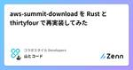
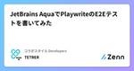
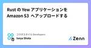
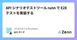
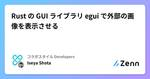
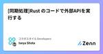

コラボスタイル Developersのフィード
https://zenn.dev/p/collabostyle
私達は『ワークスタイルの未来を切り拓く』という理念のもとワークフローの本質を追求し、新しいワークスタイルを提案するとともに、コラボスタイルが率先して時代に適したワークスタイルを常にバージョンアップし発信していきます。
フィード

aws-summit-download を Rust と thirtyfour で再実装してみた
コラボスタイル Developersのフィード
【前書き】aws-summit-download とは先日、「AWS Summitの資料を一括でDLするスクリプトを作成しました。」というポストを発見しました。https://x.com/bondai_engineer/status/1805428579985232015とても便利なツールなので、早速使わせていただきました！このようなツールを OSS で公開してくださることに感謝です🙌✨ Rewrite "aws-summit-download" In Rust突然ですが、Rewriting It In Rust と言う言葉を聞いたことはあるでしょうか？ Rewr...
2日前

JetBrains AquaでPlaywriteのE2Eテストを書いてみた 1
1
コラボスタイル Developersのフィード
はじめに「Aqua」は、JetBrains社が開発したテスト自動化に特化したIDE（統合開発環境）です。テストコード作成やテスト実行が効率的におこなえるよう、以下機能などが備わっています。E2Eフレームワーク: Selenium、Playwright、Cypressをサポート。コーディング支援: Java、Kotlin、Python、JavaScript、TypeScriptなどの言語対応。Webインスペクタ: テスト対象のロケーターの検証や、CSSやXPathの指定を補完。HTTPクライアント: テスト対象のAPIを呼び出すためのHTTPクライアントを内蔵。...
2日前

Rust の Yew アプリケーションを Amazon S3 へアップロードする
コラボスタイル Developersのフィード
はじめに以前、Rustのアプリケーションをコンパイルしてフロントエンドの実装を行うライブラリ Yewを紹介しました。今回は、Yew で作ったアプリケーションを、Amazon S3に配置して、Web上からアクセスできるようにしてみたいと思います。成果物は、Yewドキュメント通りのカウンターアプリケーションとしたいと思います。🔻以前執筆した記事https://zenn.dev/collabostyle/articles/2d87a6834ec989🔻Yew Docshttps://yew.rs/ja/docs 環境構築まずは簡単ですが、環境を構築します。以下コマンド...
2日前
Momento Topics に Node.js SDK を使って入門する 1
コラボスタイル Developersのフィード
Momento Topics とはMomento Topics は Momento クラウドインフラストラクチャ上に構築されたパブリッシュ/サブスクライブ（pub/sub）メッセージングサービスです！https://jp.gomomento.com/services/momento-topics/ 主な特徴スケーラビリティ自動的にスケールアップ/ダウンし、トラフィックの変動に対応低レイテンシーミリ秒単位の応答時間を実現シンプルな API使いやすく、直感的な API を提供サーバーレスインフラストラクチャの管理が不要マルチプ...
6日前

API シナリオテストツール runn で E2E テストを実装する 5
コラボスタイル Developersのフィード
API シナリオテストツール runn とは今回は、API シナリオテストツールである runn について紹介します😉✨https://github.com/k1LoW/runn runn の主な特徴runn は Go 言語で実装されているツールで、主な特徴は以下です。発音は「ラン エヌ」です。シナリオベースのテストツールとして機能Go 言語用のテストヘルパーパッケージとして機能ワークフロー自動化ツールとして機能以下をサポート：HTTP リクエストgRPC リクエストDB クエリChrome DevTools ProtocolSSH/ローカルコマン...
9日前
egui を使って画像を差し替え、再描画させる
コラボスタイル Developersのフィード
はじめに本記事は前回の egui というクレートを使って外部の画像を表示させる記事の続編です。Github 上の png ファイルを表示させ、さらにそれを再描画（他の画像に差し替える）をやっていければと思います。https://zenn.dev/collabostyle/articles/54f81af6df6764 下準備ここは前回とほとんど同じですが、今回は、ランダムな id を生成して、それを使用して再度画像を取得し、描画したいと思いますので、randクレートを追加しておきます。Cargo.toml[dependencies]eframe = "0.27...
9日前

Rust の GUI ライブラリ egui で外部の画像を表示させる 1
コラボスタイル Developersのフィード
はじめにRust の GUI ライブラリの egui を使って外部の画像表示をするところをやってみました。egui は eframe というフレームワークで動作し、Rust で GUI アプリケーションを簡単に構築することができます。🔻eguihttps://github.com/emilk/egui今回は、egui で外部リンクを実行して、ポケモンの画像をそのまま取得して、表示させるところをやってみます。（外部APIから取得した画像の表示も確認可能です。）https://github.com/PokeAPI/sprites 下準備egui を動作させるために、...
10日前

[同期処理]Rust のコードで外部APIを実行する
コラボスタイル Developersのフィード
はじめにRust で外部のAPIをコールする機会はしばしば出てくると思います。私もこの辺りほとんど知識がないですが、利用する機会が出てきたのでアウトプットします。APIをコールする手段として、Rustではreqwestというクレートを利用することが一般的なようです。今回は reqwestを利用した実装方法を書いていきます。https://docs.rs/reqwest/latest/reqwest/ 同期処理でAPIを実行する同期的にAPIをコールする方法をやっていきます。jsonplaceholderを使ってAPIをコールしていきたいと思います。https://...
13日前

【Rust】ライフタイムは賞味期限
コラボスタイル Developersのフィード
はじめにRustのライフタイムと明示的アノテーションについて書きます。Rustで関数を書いたときにコンパイラに怒られたので、その内容についての投稿です。 ライフタイムとは？バナナに賞味期限があるように、変数がどのくらいの間メモリに存在するのかを示したもの。Rustでは変数がいつまで生き残っているのかをはっきりさせるために、ライフタイムという仕組みを使っています。これにより、安全にメモリを管理しています。ライフタイムの具体的な例については、以下の記事が参考になります。https://doc.rust-jp.rs/rust-by-example-ja/scope/lif...
16日前
5分でわかる！Amazon SQS入門
コラボスタイル Developersのフィード
はじめにSQS初学者向けの記事となります。SQSについてちょっとだけ説明し、実際にAWSコンソールで触ってみます。 SQSとは？SQS (Simple Queue Service) とは、AWS上でキューイングを実現するサービスです。キューイングとはキューでデータを管理する仕組みのことで、非同期にデータを受け渡すことができます。メッセージキューを利用することにより、疎結合なシステムを実現することができます。SQSの構成要素については、以下の記事がわかりやすいです。https://zenn.dev/issy/articles/zenn-sqs-overviewちなみ...
23日前
NestJSでバナナをGetしてみよう
コラボスタイル Developersのフィード
はじめにNestJSをこらから学習する方向けの記事となります。やることは簡単。プロジェクトをさくっと構築してREST APIでバナナを取得するだけです。 NestJSとは？NestJSは、サーバーサイドアプリケーションを作るためのフレームワークです。サーバーサイドアプリケーションというのは、ウェブサイトの裏側で動くシステムのことです。NestJSでは、「モジュール」「コントローラー」「サービス」という3つの主要な部分を組み合わせてアプリケーションを作ります。これらを簡単に説明すると、次のようになります。 モジュール（Module）：パーツをまとめる箱アプリケーション...
24日前
Rust の CLI 作りに便利そうなクレート
コラボスタイル Developersのフィード
はじめにRust でサクッと CLI を作ってみたいと考え、色々調べていたところ、「なんか便利そう！」「これ面白い！」が結構出てきたので紹介させてください。ゆるく3つほど紹介していければと思いますので、ぜひ。 figlet-rshttps://github.com/yuanbohan/rs-figlet文字を立体的に出力できるクレート。use figlet_rs::FIGfont;fn main() { let standard_font = FIGfont::standard().unwrap(); let figure = standard_f...
1ヶ月前
REST Client であそんでみた
コラボスタイル Developersのフィード
REST Clientとは？VS CodeやCursorエディタの拡張機能。インターネット上の他のプログラムにデータを送ったり、データを受け取ったりするためのツールです。以下の記事がわかりやすいです。https://qiita.com/toshi0607/items/c4440d3fbfa72eac840c 使うものVS Code or CursorREST ClientBeeceptor（インターネット上でデータをやり取りする） 準備まずは拡張機能であるREST Clientをインストールします。プロジェクトを作成し、request.httpファイル...
1ヶ月前
Rust における文字列の所有権
コラボスタイル Developersのフィード
はじめにRust で参照&を利用するシーンは少なくないことですよね。個人的に、Rust の学習において、所有権、所有権解放、メモリ等は理解しておかなければいけないところかなと感じています。今回は文字列にフォーカスして、紹介していけたらと思います。 文字列参照はすでに知っている方もいらっしゃる方も少なくないかもしれません。&を付けることによって、所有権を保持することのない参照の値とすることができます。fn main() { let name = "Rust".to_string(); let rename = &name; ...
1ヶ月前
SQLx を使って PostgreSQL にアクセスする
コラボスタイル Developersのフィード
はじめに今回は Rust の SQLx を使って、マイグレーションファイルを作成し、PostgreSQLにアクセスするところまでやっていきたいと思います。SQLx は様々なデーターベースサービスをサポートしていますので、良いですね。PostgreSQL, MySQL, MariaDB, SQLite▼SQLxhttps://github.com/launchbadge/sqlx プロジェクトを作成Rust を動かすディレクトリを作成します。$ cargo new sqlx-sample$ cd new sqlx-sampleこれで一旦の準備は完了です。このタ...
1ヶ月前
TypeScript x Momento | Node.js SDK でキャッシュを操作する
コラボスタイル Developersのフィード
Momento Cache今、勢いのあるサーバーレスのキャッシュサービスで、圧倒的な高速性と使いやすさが売りです。https://jp.gomomento.com/services/momento-cache/Momento Cacheは、世界初の真のサーバーレスキャッシングサービスです。瞬時の弾力性、scale-to-zero機能、圧倒的な高速パフォーマンスを提供します。 容量の選択、管理、プロビジョニングが必要な時代は終わりました。Momento Cacheでは、SDKを入手し、エンドポイントを取得し、コードに数行入力するだけで、すぐに実行できます。Momento Ca...
1ヶ月前
AWS CDK (TypeScript) で Step Functions を構築する
コラボスタイル Developersのフィード
AWS CDK で Step Functions を構築したい AWS CDK バージョン2.130.0 を使用しています。!AWS CDK はバージョンアップが早いので、ご注意ください！ Map で Lambda を呼び出すワークフローを構築するざっとワークフローの流れを定義すると以下のようになります。Lambda 関数の呼び出し -> ユーザー一覧を取得fail で処理を続行するか判定Map でユーザー一覧分の繰り返し処理20歳以上かの判定判定に応じた Lambda 関数の呼び出し ディレクトリ構成今回は以下の構成で実装します。r...
1ヶ月前
Amazon EventBridge で Step Functions を定期実行する
コラボスタイル Developersのフィード
はじめにEventBridgeからStepFunctionsを定期的に呼び出して実行するための手順です。 Amazon EventBridgeとは？システムのイベントやスケジュールをトリガーにして、後続処理を実行するためのサービスです。例えば毎日00:00に Lambda関数を実行したい場合、EventBridgeでスケジュール設定をすれば実現可能となります。 ターゲットEventBridgeが呼び出す後続の処理のこと。今回はStep Functionsを使います。事前にStep Functionsでステートマシンを作成しておきます。 EventBridgeで...
1ヶ月前
Rust 基本文法 - Struct 構造体-
コラボスタイル Developersのフィード
はじめにStruct は Rust における構造体を意味します。基本文法シリーズは全てそうなのですが、構造体の文法はかなり基本的になるので、紹介していきます。いつものように、Rust Playground で手を動かすことができますので、良ければ一緒に書いていきましょう。https://play.rust-lang.org/ 構造体構造体は、データ型をまとめたものです。Rust には データ型という概念があり、変数や関数などの要素にはデータ型というものがついてきます。それらを一つに取りまとめたのが、構造体です。データ型https://doc.rust-jp.rs...
1ヶ月前
Rust 基本文法 -繰り返し処理-
コラボスタイル Developersのフィード
はじめに久しぶりに、Rust 基本文法シリーズです。今回は、どの言語でも肝となってくる繰り返し処理について一緒に学んでいければと思います。コードは Rust Playground でも試すことができますので、もし宜しければ手を動かしてみてください。https://play.rust-lang.org/ 繰り返し処理Rust における繰り返し処理の方法はいくつか挙げられますが、比較的、代表的なものにフォーカスしつつ、普段私が業務やプライベートでも利用する機会の多い方法に絞り込んで紹介できればと思います。for ~ in ~ 文iter() + for_each()...
2ヶ月前